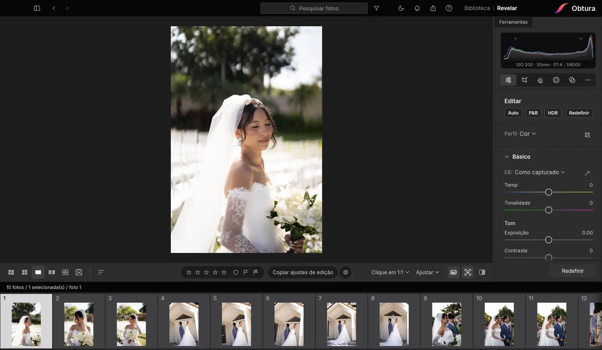

Editor de fotos RAW para Mac e Windows
Biblioteca, revelação e IA num programa só, feito por fotógrafo de casamento para quem edita muitas fotos.
Testar 14 dias grátisSem cartão de crédito · Mac e Windows

Revelação completa
Temperatura, tonalidade, exposição, contraste, altas luzes, sombras, curvas, HSL, perfis de câmera e muito mais. As edições aparecem na hora, sempre nítidas.
Feito para casamentos
Importe o casamento inteiro, sincronize as edições entre fotos, ponha as câmeras em ordem pelo horário e exporte tudo de uma vez. A IA escolhe as melhores fotos e remove distrações do fundo.
Mac e Windows
No Mac com chip Apple (M1 ou mais novo) e no Windows 10 e 11 (64 bits), pela Microsoft Store. Tudo roda no seu computador e o Obtura se atualiza sozinho.
Perguntas frequentes
Quais câmeras o Obtura abre?
RAW de Sony, Canon, Nikon, Fujifilm, Olympus e outras marcas, além de JPEG.
Funciona sem internet?
Sim. Depois de instalado, você edita sem internet.
Quanto custa?
14 dias grátis, sem cartão de crédito. Depois, R$ 29,90 por mês ou R$ 299 por ano (2 meses grátis), no Pix ou no cartão.
Roda no Windows?
Sim, no Windows 10 e 11 de 64 bits, instalado pela Microsoft Store.